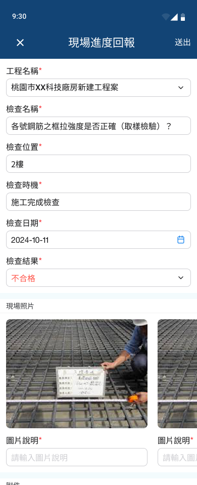
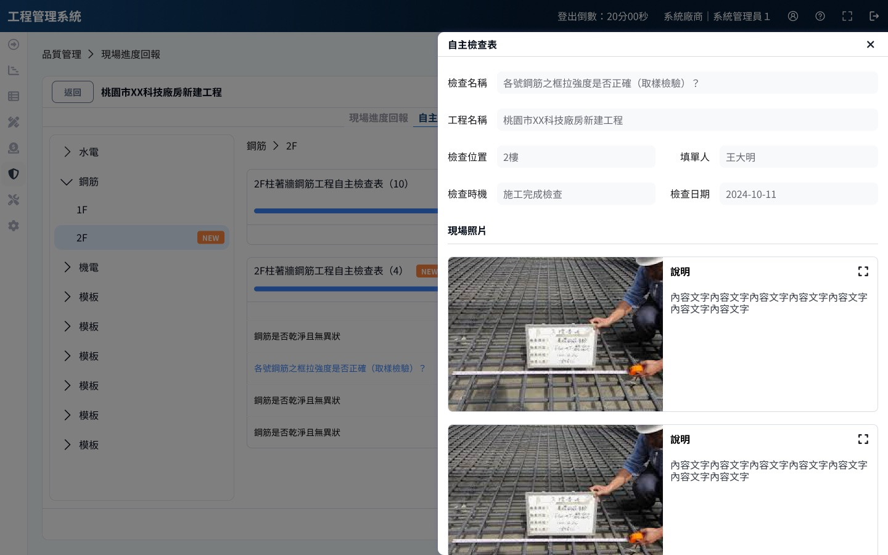
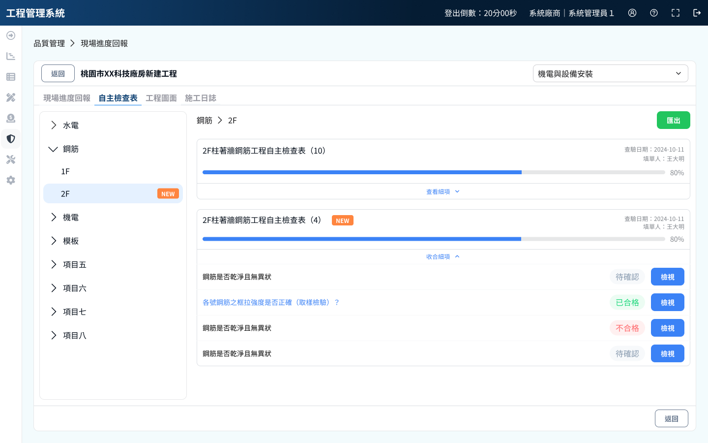
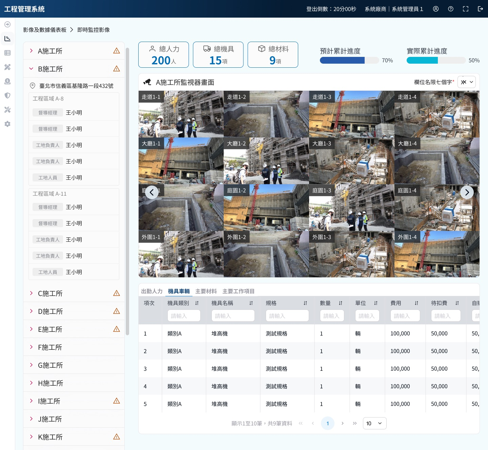
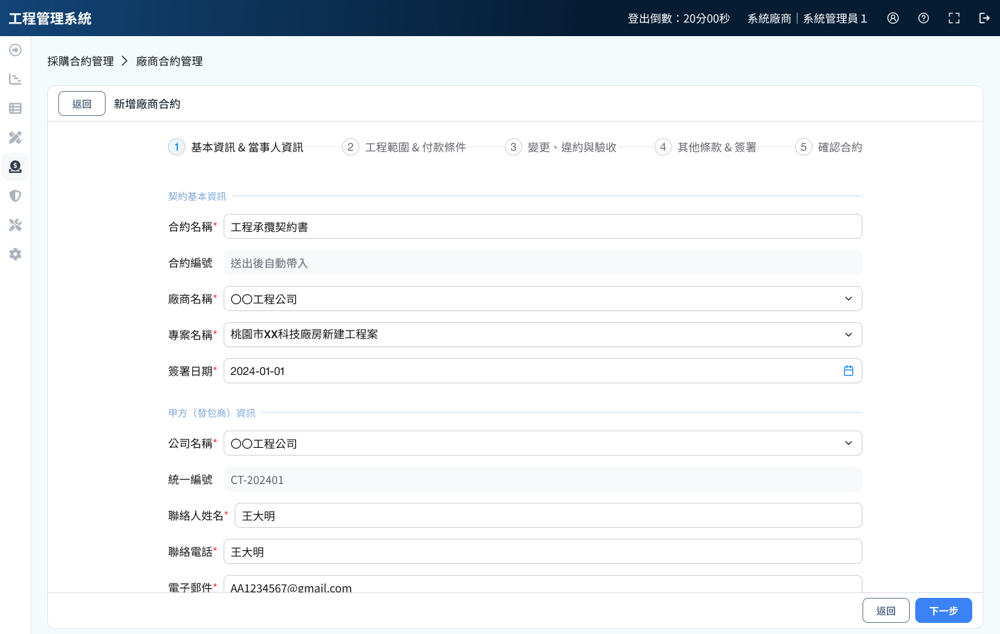
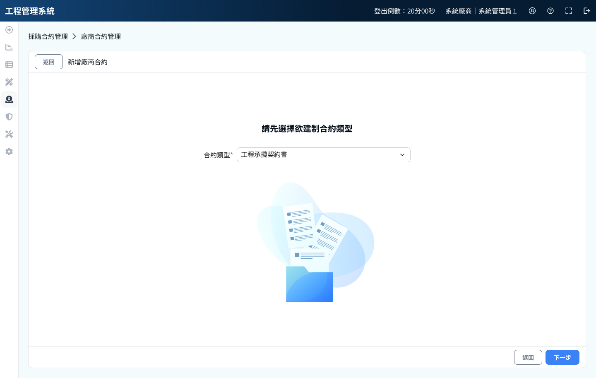
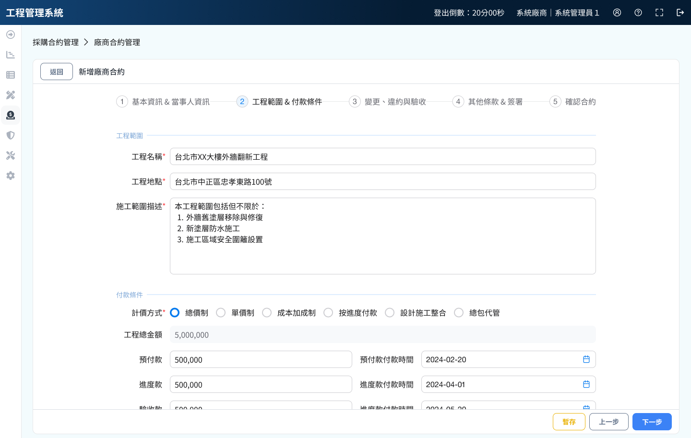

From first inquiry to site monitoring, in one flowConstruction Project Management System
An integrated project management platform for construction companies, bringing every stage of a project — inquiry, kickoff, purchasing, contracts, on-site QC, document approval and monitoring — into one system. The office manages and approves on the web, site crews report progress through the app, and managers follow everything from a dashboard.

System Flow
Project data carries forward from the first inquiry, so nothing has to be re-entered at each stage.
Pre-projectWinning the job
- 01
Inquiry
Log inquiries and meeting notes
- 02
Kickoff
Carry over code and notes, build the roster
ProcurementPurchasing and contracts
- 03
Purchasing
Requests, quotes, comparison, award
- 04
Contracts
Vendor data filled in, step-by-step setup
ExecutionConstruction and QC
- 05
On-site QC
Photo reports, self-inspection forms
ApprovalsFrom kickoff on
- 06
Document approval
After kickoff- Building permits
- Government filings
- Drawing reviews
During and after construction- Fire code compliance
MonitoringFrom kickoff on
- 07
Monitoring
ProgressOffice- Gantt chart
- Project costs
- Pending approvals
Site monitoringSite- Live camera feeds
- Crew on site
- Equipment and materials
Needs & Solutions
Site reporting
App for the site, web for the office
Site crews and office staff care about different things, so the same data gets two interfaces: the site needs fast photo reporting, and the office needs progress at a glance.
-

01
Photo reports from the site
Site crews fill in self-inspection forms and upload photos in the app; failed items are marked in red.
-

02
Photos next to checklist items
Open an inspection form to see site photos and notes in a side panel, without leaving the list.
-

03
Every result, item by item
See each inspection form’s completion by work item and floor. Every item is marked pending, passed or failed, and new submissions are tagged NEW.
Design Rationale
Site crews need to report quickly, while the office needs the big picture. So the app focuses on photos and inspection results, and the web app handles consolidation and progress tracking — the same data, shown the way each role needs it.
Cross-site monitoring
Every site office in one view
Monitoring moves from a single project up to the company level, so managers can see every site at once. Two views — project progress and on-site monitoring — cover both schedule and site management.
-
01
Project progress
Gantt chart, project costs and pending approvals on one page, so every project’s status is clear at a glance.
-

02
On-site monitoring
Switch between camera feeds from the site office list while tracking crews, equipment and materials.
Design Rationale
Each role watches different things: the office tracks progress and costs, while the site cares about crews and equipment. Splitting monitoring by context lets each role get what they need quickly.
Connected data
Enter it once, reuse it everywhere
Inquiries, kickoff and contracts share the same project and vendor data. Later forms fill in what’s already known, so users only confirm it and add what’s different.
-

01
Meeting notes from day one
Notes from every meeting are uploaded to the inquiry while the deal is still in progress.
-

02
Project code carries over
If the deal is won, kickoff reuses the project code; if not, the inquiry is closed.
-

03
Contracts pre-filled
Pick the vendor and project, and details like the tax ID fill in automatically. Gray fields come from the system and don’t need input.
Design Rationale
Project codes and vendor details are used again and again across stages. Re-entering them wastes time and causes mismatches, so the project code links the whole flow — carried forward if the deal is won, closed if not — keeping data consistent.
Step-by-step contracts
Long contracts in steps, with a preview
Steps are arranged by contract type — from basics and project terms to clauses and signatures — so users can see their progress as they go and preview the full contract at the end.
-

01
Choose the contract type
Users pick a contract type first, and the system sets up the matching steps.
-

02
One step at a time
Click the step bar to jump to any section. Based on interview feedback, I added Save draft so users can stop halfway.
-

03
Preview before submitting
Users review everything in the formal contract layout before saving, so errors are caught before submission.
Design Rationale
Contracts are complex, and each type needs different fields. Steps adapt to the contract type, Save draft lets users finish in stages, and the final preview reduces omissions and errors.
Outcomes & Process
Design Process
This was proposal-phase work: I designed both the web and app interfaces on my own, and other teammates joined only after the contract was won. Company policy kept designers from meeting clients at this stage, so the sales manager ran the interviews and brought back the requirements.
- Input from sales
The sales manager interviewed the client, and I mapped workflows and pain points from those notes.
- Breaking down the flow
Split a project from inquiry to close-out into modules and decided which data carries forward.
- Proposal screens in Figma
Designed the key flows and states with one shared component set for web and app.
- Review with sales
Confirmed scope and priorities so the proposal met the client’s expectations.
What I Brought
Having designed internal systems before, I understood enterprise workflows and data management, so I could quickly grasp how a system like this works and turn complex business processes into concrete features and interfaces — including construction-specific workflows like negotiation rounds, drawing reviews, and building permit and fire code documents.
Reflection
Project Status
I’ve since left the company and can’t follow the project’s development or rollout, so this case covers the proposal-phase design only. It hasn’t been validated in production.
Looking back, there are two things I’d do better next time:
- Close the gap in second-hand requirements. Company policy meant I could only learn the client’s needs through the sales manager. Next time I’d prepare an interview guide and collect the client’s real forms and site photos, to design closer to the first-hand context.
- Design for real site conditions. Beyond a complete workflow, I’d account for spotty connections, gloved hands and bright sunlight — prioritizing offline drafts, larger tap targets and higher contrast.
A proposal can show the design thinking, but only real-world use can prove whether a product truly solves the problem.